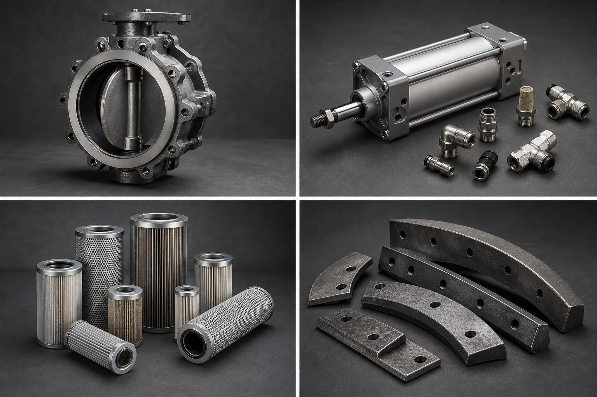

Инженерный каталог
Запчасти для БСУ с проверкой совместимости
Поиск по OEM, узлу, фото и признакам поломки. Публично без цен: всё через быстрый RFQ.
DEMO PHOTOSVAH300 · затвор ДУ300карточка с фактами, не рекламная простыня
Популярные позиции
Все →
Фильтр-картридж для силоса цемента
RFQ без гадания
Приложите фото шильдика и узла
Сайт должен просить ровно те данные, которые нужны для подбора, а не заставлять клиента лазить по каталогу как крысу в лабиринте.
Загрузить фото / запросить КПDemo-фото синтетические, для оценки дизайна.